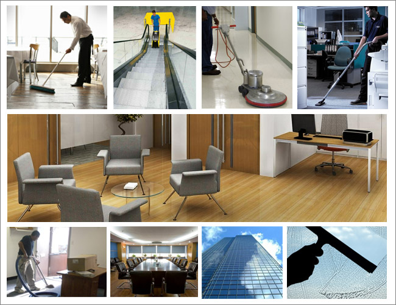

Optimum Cleaning understands the importance of finding commercial cleaning services you can count on to disinfect and clean your business. We are more than just the experts in home cleaning; we are experts in providing the healthy, commercial-level deep clean your business — and your customers — deserve
Best service
Optimum Cleaning is the only commercial cleaning company to clean for health specifically because we know there are things worse than dust and grime. While our proven cleaning strategy leaves nowhere for dirt to hide, it also removes more bacteria and viruses than traditional commercial cleaning services.

Why commercial service?
In-house cleaning means more overhead, administrative, insurance, and payroll costs, as well as the costs of cleaning supplies, tools, and equipment. Commercial cleaning services can help reduce liability risks.